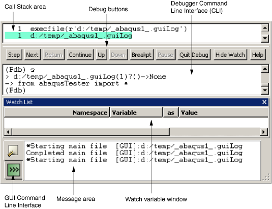

Using the Abaqus PDE#
The following sections contain detailed information that you can use to create and work with files in the Abaqus PDE.
Creating .guiLog files#
The Abaqus PDE is designed to work any type of Python files, including .guiLog files. A .guiLog is a Python script that records actions in the Abaqus/CAE GUI. When you create a .guiLog, it records every mouse click, dialog box entry, and menu, tool, or viewport selection.
To record actions from Abaqus/CAE, the Abaqus PDE session must be associated with a Abaqus/CAE session. The Abaqus PDE and Abaqus/CAE sessions are associated if you started them together from a command prompt or if you started the Abaqus PDE by selecting FileAbaqus PDE in Abaqus/CAE. For more information on starting the Abaqus PDE, see Starting the Abaqus Python development environment.
From the main menu bar in the Abaqus PDE, select FileNew to create a new empty file in the main window.
Tip: You can also click the New guiLog icon to create a new .guiLog file.
Click the Start Recording icon to begin recording actions from Abaqus/CAE.
Abaqus writes the following two lines to begin the file:
from abaqusTester import * import abaqusGui
Complete all the desired actions in the Abaqus/CAE session to record them in the .guiLog file.
Note
When you record .guiLog files, do not use mouse button 2 to close the dialog box for a procedure. Instead, use the buttons in the dialog box to close it. Using mouse button 2 adds multiple dialog box closing commands to the recorded .guiLog file. Since only one command is needed to close the dialog, the extra commands will result in an error when the recorded script is played.
Click the Stop Recording icon to stop recording.
Use standard text editing techniques to edit the file in the main window. Additional editing tools are available in the Edit menu (for more information, see Editing files in the Abaqus PDE.)
To add more recorded commands to the file, position the cursor at the desired location or click End of Main File to position the cursor at the end of the file, then repeat Step 2 through Step 4.
Select FileSave to save the file or FileSave As to save the file with a new name; new files automatically use Save As.
Running a script#
The Abaqus PDE runs scripts using one of three processes - GUI, kernel, or local. By default, .guiLog files are run in the Abaqus/CAE GUI process. If the Abaqus PDE was opened from within Abaqus/CAE, .py files and all other file types are run in the Abaqus/CAE kernel process by default. If the Abaqus PDE was opened without Abaqus/CAE, .py files are run in the local process by default. The local process runs the script without Abaqus/CAE, using Python in the local (PDE) process. You can change the process by selecting Settings -> Run Script In and choosing the desired process, or by clicking the GUI, Kernel, or Local radio buttons located above the main window. If the Abaqus PDE was opened without Abaqus/CAE and you run a script with the GUI or Kernel process, Abaqus PDE will start Abaqus/CAE to run the script.
To run the main file, click Play above the main window. The Abaqus PDE runs the main file until it completes, encounters an error, or reaches a breakpoint. As the script runs, the current line is highlighted according to the Line Animation settings.
Use the other buttons - Next Line, Stop, Go to Start, and Go to End - to execute the main file one line at a time, stop running the file, or reposition the cursor at the beginning or end of the file, respectively.
As you run a script, you might want to specify a breakpoint to pause script execution at a particular line. For more information about breakpoints, see Using breakpoints.
Using the debugger#
You can use the debugger in the Abaqus PDE to troubleshoot your scripts.
To open the debugger, select Window -> Debugger or click Start debugger. If you have a script paused in the main window, the debugger opens at the current position of the test. If you do not have a paused script, the debugger automatically begins running the main file and positions the cursor at the start of the script.
The debugger consists of a call stack area, action buttons, and the debugger command line interface (CLI) window, as shown in Fig. 18 The debugger is positioned between the Abaqus PDE main window and the message area.
{kind=link}

Fig. 18 The Abaqus PDE debugger.#
The debugger uses a custom Python module named atxPdb, based on the Python pdb module. You can enter Pdb commands in the debugger CLI; you can also enter any Python statements in the debugger CLI. Python statements are executed in the same process—GUI, kernel, or local—that is running the current script (for more information, see /user/environment/use-pde:running a script).
Note
If you enter a command in the debugger CLI and it does not seem to work, it may be conflicting with a Pdb command.
The call stack area shows the commands that are currently being executed.
The debugger contains a tool to watch variables as scripts are executed. To add a variable to the watch list, click mouse button 3 over the variable name in the Abaqus PDE main window and select Add Watch: variable name from the menu that appears. The Abaqus PDE adds the variable to the watch list, indicating the namespace that the variable is defined within, the variable name, the type of data the variable can store, the current value, and the file and line where the variable is located. When you execute or step through the script, the variable information is updated as needed. You can also activate the watch list tool after starting the debugger by selecting Show Watch from the action buttons below the call stack area or by selecting Window -> Debug Windows -> Watch List. Abaqus displays the Watch List area below the debugger or below the main window if the debugger is not open.
You can also customize the following aspects of variable display in the Watch List:
You can switch a variable’s display format between repr and str formats. The repr() function returns a string that is better suited to being read by the Python interpreter, while the str() function returns a string better suited to printing. For more information about the built-in Python functions repr() and str(), refer to the official Python website (https://www.python.org).
To toggle between these settings, click mouse button 3 on a watch variable row and select Display repr (not str) value of variable name or Display str (not repr) value of variable name from the list that appears. If the variable is a local variable and the program is not accessing that section of code, the variable value will be set to “not evaluated.” Variable values are also set to “not evaluated” if the program is not running.
You can prompt the Abaqus PDE to pause when the program reaches a line in which the value of a selected watch variable has changed. To toggle on the “stop on change” option for a particular watch variable, click mouse button 3 on the variable’s line and select Stop on change to variable name from the list that appears. When this option is selected, Abaqus PDE stops at the line after the change.
You can remove any watch variables from the debugger by clicking mouse button 3 on the variable’s line and selecting Delete watch var variable name from the list that appears.
Using breakpoints#
Breakpoints are points where script execution pauses until you select Play or Next Line above the main window.
You can add breakpoints at any line in a script. Breakpoints also allow you to pause plug-ins and custom applications so you can trace their execution.
To add a breakpoint, position the cursor on the desired line of the script, click mouse button 3, and select Add Breakpoint. Use the same process, selecting Remove Breakpoint, to remove breakpoints. You can also add and remove breakpoints using the breakpoint tool located above the main window or the F9 key.
Breakpoints are indicated by an asterisk to the right of the line number in the Abaqus PDE. If syntax colors are active, the line number, asterisk, and the line of code are colored using the current breakpoint color selection (for more information, see Selecting the settings for use with a file).
You can review breakpoints in all open files by selecting Window -> Debug Windows -> Breakpoints List. The Abaqus PDE Breakpoints dialog box lists the file path, name, and each line number where a breakpoint is located. You can double-click the paths to position the cursor in the main window at the selected breakpoint.
Using the Abaqus PDE with plug-ins#
The functions and tools in the Abaqus PDE work the same way for plug-ins as they do for other scripts. However, since plug-ins are launched within Abaqus/CAE, you cannot load and run them as a main file like you can with other scripts. Instead, you add breakpoints, then run the plug-ins as usual.
If the plug-in contains both kernel and GUI functions, you must trace them separately. Tracing the kernel and GUI functions separately prevents problems that can occur in Abaqus/CAE as the Abaqus PDE attempts to switch between kernel and GUI modes while the code is running. Separating the functions also provides a logical approach to locating problems in the kernel code versus ones in the user interface.
After you save the changes to your plug-in, you can trace its execution.
Open the file that you want to debug.
Position the cursor where you want to add a breakpoint. Click mouse button 3, and select Add Breakpoint. (For more information, see /user/environment/use-pde:using breakpoints.)
Start the plug-in from within Abaqus/CAE.
The plug-in code appears in the Abaqus PDE window, stopped at the breakpoint or at the line immediately following the start trace statement, if you added one.
Use the Abaqus PDE controls and options described in the previous sections to step through the execution of the plug-in.
Using the Abaqus PDE with custom applications#
Custom applications are scripts created to modify or add functionality to Abaqus/CAE. They typically use a combination of the Abaqus Scripting Interface commands and the Abaqus GUI toolkit commands to extend the user interface and the underlying kernel commands. Custom applications are launched concurrent with the start of an Abaqus/CAE session, and they are integrated into the existing functionality.
If the application contains both kernel and GUI functions, you must trace them separately. Tracing the kernel and GUI functions separately prevents problems that can occur in Abaqus/CAE as the Abaqus PDE attempts to switch between kernel and GUI modes while the code is running. Separating the functions also provides a logical approach to locating problems in the kernel code versus ones in the GUI code.
Enter the following at a command prompt to start the Abaqus PDE and the custom application:
abaqus pde -pde [args]
where abaqus is the command you use to start Abaqus and args are the arguments required to start the custom application. For example, if you enter abaqus cae -custom xxx.py to start Abaqus/CAE and your application, enter abaqus pde -pde -custom xxx.py.
Note:
You cannot start the custom application and launch the Abaqus PDE from within Abaqus/CAE since the initial startup processes would already be complete.
Open the file that you want to debug.
Position the cursor where you want to add a breakpoint. Click mouse button 3, and select Add Breakpoint. (For more information, see /user/environment/use-pde:using breakpoints.)
Click Start CAE at the top right of the Abaqus PDE to start Abaqus/CAE with the custom startup commands.
The application code appears in the Abaqus PDE window, stopped at a breakpoint.
Use the Abaqus PDE controls and options described in the previous sections to step through the execution of the custom application.